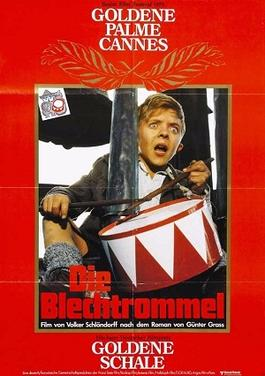

The Tin Drum

Volker Schlöndorff
1979
142 minutes
Wikipedia link
IMDB link
TV Tropes link
This is text.
Time to choose something different:
- I'm actually really glad Klaus Kinski was not in this movie... - Turn to section 12
- Watching that kid for three hours was not easy on the eyes. Time for some Alain Delon! - Turn to section 27
- Enough uncomfortable sex scenes with young actors! Let's watch something wholesome, maybe with some music and dancing! - Turn to section 237